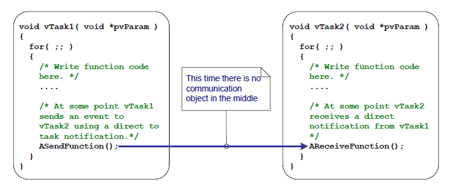
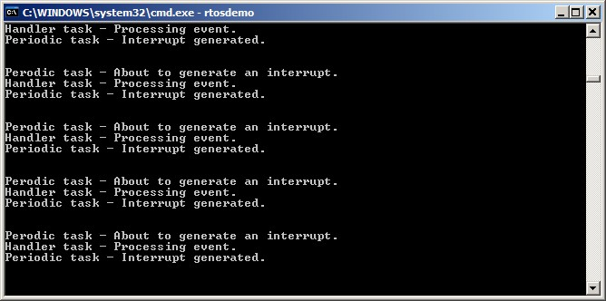
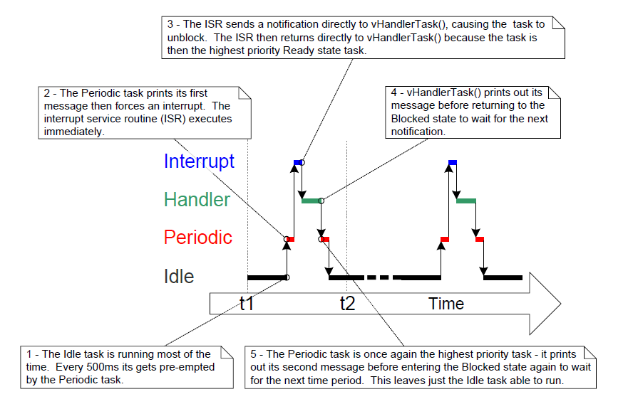
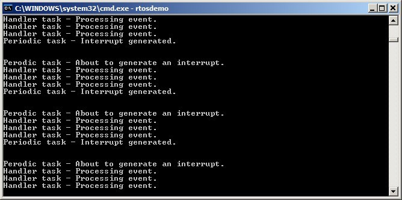
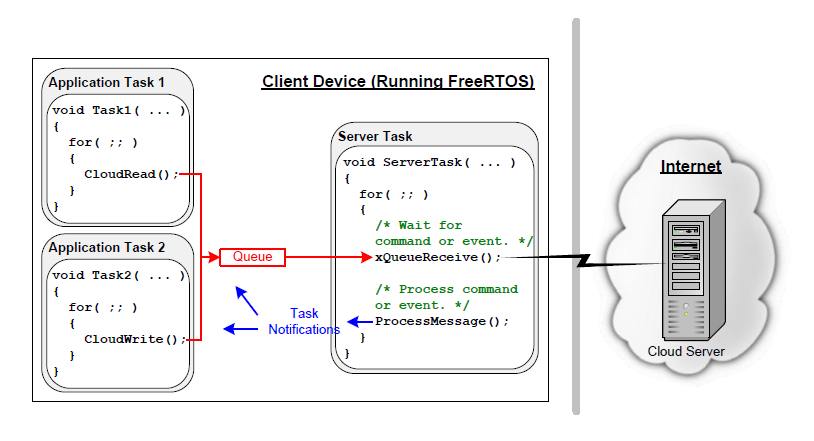

10 任务通知
10.1 简介
FreeRTOS 应用通常由一系列独立任务组成，这些任务相互通信以共同实现系统功能。任务通知是一种高效机制，允许一个任务直接通知另一个任务。
10.1.1 通过中介对象通信
本书已介绍了任务之间通信的多种方式。这些方法都需要创建通信对象，如队列、事件组和各种类型的信号量。
使用通信对象时，事件和数据不会直接发送到接收任务或接收 ISR，而是发送到通信对象。同样，任务和 ISR 也是从通信对象接收事件和数据，而不是直接从发送方接收。如下图 10.1 所示。

图 10.1 通过通信对象发送事件的示意图
10.1.2 任务通知——直接任务通信
“任务通知”允许任务与其他任务交互，并与 ISR 同步，无需单独的通信对象。通过任务通知，任务或 ISR 可以直接向接收任务发送事件，如图 10.2 所示。

图 10.2 任务通知用于直接从一个任务向另一个任务发送事件的示意图
任务通知功能是可选的。要启用任务通知功能，请在 FreeRTOSConfig.h 中将 configUSE_TASK_NOTIFICATIONS 设置为 1。
当 configUSE_TASK_NOTIFICATIONS 设置为 1 时，每个任务至少有一个“通知状态”，可以是“待处理”或“未处理”，还有一个“通知值”，为 32 位无符号整数。当任务收到通知时，其通知状态被设置为待处理。当任务读取其通知值时，通知状态被设置为未处理。 如果 configTASK_NOTIFICATION_ARRAY_ENTRIES 设置为大于 1 的值，则会有多个通知状态和值通过索引标识。
任务可以在阻塞状态下等待其通知状态变为待处理，具有可选的超时。
10.1.3 范围
本章讨论：
- 任务的通知状态和通知值。
- 任务通知可以在何时何地替代通信对象（如信号量）的使用。
- 使用任务通知替代通信对象的优点。
10.2 任务通知的优缺点
10.2.1 任务通知的性能优势
使用任务通知向任务发送事件或数据的速度比使用队列、信号量或事件组执行等效操作要快得多。
10.2.2 RAM 占用优势
同样，使用任务通知向任务发送事件或数据所需的 RAM 也比使用队列、信号量或事件组执行等效操作要少得多。这是因为每个通信对象（队列、信号量或事件组）在使用之前必须创建，而启用任务通知功能则具有固定的开销。任务通知的 RAM 成本为 configTASK_NOTIFICATION_ARRAY_ENTRIES * 5 字节每个任务。configTASK_NOTIFICATION_ARRAY_ENTRIES 的默认值为 1，使得任务通知的默认大小为每个任务 5 字节。
10.2.3 任务通知的局限性
任务通知比通信对象更快，使用的 RAM 更少，但并不是在所有场景中都可以使用任务通知。本节记录了无法使用任务通知的场景：
- 发送事件或数据到 ISR
通信对象可用于发送事件和数据从 ISR 到任务，以及从任务到 ISR。
任务通知可用于发送事件和数据从 ISR 到任务，但不能用于发送事件或数据从任务到 ISR。
- 启用多个接收任务
一个通信对象可以被任何知道其句柄的任务或 ISR 访问（这可能是一个队列句柄、信号量句柄或事件组句柄）。任何数量的任务和 ISR 可以处理发送到任何给定通信对象的事件或数据。
任务通知是直接发送到接收任务的，因此它们只能被发送通知的任务处理。然而，这在实际情况下很少成为限制，因为虽然多个任务和 ISR 发送到同一个通信对象是常见的，但多个任务和 ISR 从同一个通信对象接收则很少见。
- 缓冲多个数据项
队列是一个可以同时容纳多个数据项的通信对象。已发送到队列但尚未从队列接收的数据缓存在队列对象内。
任务通知通过更新接收任务的通知值向任务发送数据。任务的通知值一次只能容纳一个值。
- 广播给多个任务
事件组是一个通信对象，可用于同时向多个任务发送事件。
任务通知是直接发送给接收任务的，因此只能被接收任务处理。
- 在发送完成之前以阻塞状态等待
如果通信对象暂时处于一种状态，意味着不能再向其中写入更多数据或事件（例如，当队列已满时，不能再向队列发送数据），那么尝试写入对象的任务可以选择性地进入阻塞状态，以等待其写入操作完成。
如果任务尝试向一个已经有通知待处理的任务发送任务通知，则发送任务无法在阻塞状态下等待接收任务重置其通知状态。正如将要看到的，这在实际情况下很少成为任务通知使用中的限制。
10.3 使用任务通知
10.3.1 任务通知 API 选项
任务通知是一种非常强大的特性，通常可以替代二进制信号量、计数信号量、事件组，有时甚至是队列。这种广泛的使用场景可以通过使用 xTaskNotify() API 函数发送任务通知，以及使用 xTaskNotifyWait() API 函数接收任务通知来实现。
然而，在大多数情况下，并不需要 xTaskNotify() 和 xTaskNotifyWait() 提供的全部灵活性，因此提供了 xTaskNotifyGive() API 函数作为 xTaskNotify() 的更简单但灵活性较低的替代方案，提供了 ulTaskNotifyTake() API 函数作为 xTaskNotifyWait() 的更简单但灵活性较低的替代方案。
任务通知系统不限于单个通知事件。配置参数 configTASK_NOTIFICATION_ARRAY_ENTRIES 默认设置为 1。如果将其设置为大于 1 的值，则在每个任务内部创建一个通知数组。这允许通过索引管理通知。每个任务通知 API 函数都有一个索引版本。使用非索引版本将导致访问 notification[0]（数组中的第一个）。每个 API 函数的 indexed 版本通过后缀 Indexed 来标识，因此函数 xTaskNotify 变为 xTaskNotifyIndexed。为简单起见，本书将贯穿始终使用每个函数的非索引版本。
任务通知 API 是作为宏实现的，这些宏调用每种 API 函数类型的底层 Generic 版本。为简单起见，本书将这些 API 宏称为函数。
10.3.1.1 完整的 API 函数列表 27
xTaskNotifyGivexTaskNotifyGiveIndexedvTaskNotifyGiveFromISRvTaskNotifyGiveIndexedFromISRvTaskNotifyTakevTaskNotifyTakeIndexedxTaskNotifyxTaskNotifyIndexedxTaskNotifyWaitxTaskNotifyWaitIndexedxTaskNotifyStateClearxTaskNotifyStateClearIndexedulTaskNotifyValueClearulTaskNotifyValueClearIndexedxTaskNotifyAndQueryIndexedFromISRxTaskNotifyAndQueryFromISRxTaskNotifyFromISRxTaskNotifyIndexedFromISRxTaskNotifyAndQueryxTaskNotifyAndQueryIndexed
(27): 这些函数实际上是作为宏实现的。
注意：接收通知的
FromISR函数不存在，因为通知始终是发送给任务的，而中断与任何任务都没有关联。
10.3.2 xTaskNotifyGive() API 函数
xTaskNotifyGive() 将通知直接发送到任务，并递增（加一）接收任务的通知值。调用 xTaskNotifyGive() 将使接收任务的通知状态设置为待处理（如果它尚未处于待处理状态）。
提供 xTaskNotifyGive() API 函数是为了允许将任务通知用作二进制信号量或计数信号量的更轻量级和更快的替代方案。
BaseType_t xTaskNotifyGive( TaskHandle_t xTaskToNotify );
BaseType_t xTaskNotifyGiveIndexed( TaskHandle_t xTaskToNotify, UBaseType_t uxIndexToNotify );
列表 10.1 xTaskNotifyGive() API 函数原型
xTaskNotifyGive()/xTaskNotifyGiveIndexed() 参数和返回值
xTaskToNotify
要发送通知的任务的句柄——有关获取任务句柄的信息，请参见 xTaskCreate() API 函数的 pxCreatedTask 参数。
uxIndexToNotify
数组中的索引
- 返回值
xTaskNotifyGive() 是一个宏，它调用 xTaskNotify()。传递给 xTaskNotify() 的参数由宏设置，使得 pdPASS 是唯一可能的返回值。稍后将描述 xTaskNotify()。
10.3.3 vTaskNotifyGiveFromISR() API 函数
vTaskNotifyGiveFromISR() 是 xTaskNotifyGive() 的一个版本，可以在中断服务例程中使用。
void vTaskNotifyGiveFromISR( TaskHandle_t xTaskToNotify,
BaseType_t *pxHigherPriorityTaskWoken );
列表 10.2 vTaskNotifyGiveFromISR() API 函数原型
vTaskNotifyGiveFromISR() 参数和返回值
xTaskToNotify
要发送通知的任务的句柄——有关获取任务句柄的信息，请参见 xTaskCreate() API 函数的 pxCreatedTask 参数。
pxHigherPriorityTaskWoken
如果要发送通知的任务正在阻塞状态等待接收通知，则发送通知将使该任务离开阻塞状态。
如果调用 vTaskNotifyGiveFromISR() 导致任务离开阻塞状态，并且被解除阻塞的任务的优先级高于当前正在执行的任务（被中断的任务），则 vTaskNotifyGiveFromISR() 将在内部将 *pxHigherPriorityTaskWoken 设置为 pdTRUE。
如果 vTaskNotifyGiveFromISR() 将此值设置为 pdTRUE，则在中断退出之前应执行上下文切换。这将确保中断直接返回到最高优先级的就绪状态任务。
与所有中断安全的 API 函数一样，pxHigherPriorityTaskWoken 参数在使用之前必须设置为 pdFALSE。
10.3.4 ulTaskNotifyTake() API 函数
ulTaskNotifyTake() 允许任务在阻塞状态下等待其通知值大于零，并在返回之前递减（从中减去）或清除任务的通知值。
提供 ulTaskNotifyTake() API 函数是为了允许将任务通知用作二进制信号量或计数信号量的更轻量级和更快的替代方案。
uint32_t ulTaskNotifyTake( BaseType_t xClearCountOnExit, TickType_t
xTicksToWait );
列表 10.3 ulTaskNotifyTake() API 函数原型
ulTaskNotifyTake() 参数和返回值
xClearCountOnExit
如果 xClearCountOnExit 设置为 pdTRUE，则调用任务的通知值将在返回之前清除为零。
如果 xClearCountOnExit 设置为 pdFALSE，并且调用任务的通知值大于零，则调用任务的通知值将在返回之前递减。
xTicksToWait
调用任务应在阻塞状态下等待其通知值大于零的最长时间。
块时间以滴答周期为单位指定，因此它所代表的绝对时间取决于滴答频率。宏 pdMS_TO_TICKS() 可用于将以毫秒为单位指定的时间转换为以滴答为单位的时间。
将 xTicksToWait 设置为 portMAX_DELAY 将导致任务无限期等待（不超时），前提是 INCLUDE_vTaskSuspend 在 FreeRTOSConfig.h 中设置为 1。
- 返回值
返回值是调用任务的通知值 在 根据 xClearCountOnExit 参数的值被清除为零或递减之前。
如果指定了块时间（xTicksToWait 不为零），并且返回值不为零，则调用任务可能已进入阻塞状态，以等待其通知值变为大于零，但其通知值在块时间到期之前已被更新。
如果指定了块时间（xTicksToWait 不为零），并且返回值为零，则调用任务被置于阻塞状态，以等待其通知值变为大于零，但在此之前指定的块时间已到期。
示例 10.1 使用任务通知替代信号量，方法 1
示例 7.1 使用二进制信号量从中断服务例程解除任务的阻塞——有效地将任务与中断同步。此示例复制了示例 7.1 的功能，但使用直接任务通知替代了二进制信号量。
列表 10.4 显示了与中断同步的任务的实现。用于示例 7.1 中的 xSemaphoreTake() 调用已被 ulTaskNotifyTake() 调用替换。
ulTaskNotifyTake() 的 xClearCountOnExit 参数设置为 pdTRUE，这导致接收任务的通知值在 ulTaskNotifyTake() 返回之前被清除为零。因此，在每次调用 ulTaskNotifyTake() 之间，有必要处理所有已可用的事件。在示例 7.1 中，由于使用了二进制信号量，因此必须从硬件确定待处理事件的数量，而这并不总是可行的。在示例 10.1 中，待处理事件的数量是通过 ulTaskNotifyTake() 返回的。
在调用 ulTaskNotifyTake 之间发生的中断事件被锁存到任务的通知值中，如果调用任务已经有通知待处理，则调用 ulTaskNotifyTake() 将立即返回。
/* 周期性任务生成软件中断的频率。 */
const TickType_t xInterruptFrequency = pdMS_TO_TICKS( 500UL );
static void vHandlerTask( void *pvParameters )
{
/* xMaxExpectedBlockTime 被设置为比事件之间的最大预期时间稍长。 */
const TickType_t xMaxExpectedBlockTime = xInterruptFrequency +
pdMS_TO_TICKS( 10 );
uint32_t ulEventsToProcess;
/* 与大多数任务一样，该任务在无限循环中实现。 */
for( ;; )
{
/* 等待接收从中断服务例程直接发送到此任务的通知。 */
ulEventsToProcess = ulTaskNotifyTake( pdTRUE, xMaxExpectedBlockTime );
if( ulEventsToProcess != 0 )
{
/* 至少发生了一次事件。循环处理所有待处理的事件（在本例中，
仅打印出每个事件的消息）。 */
while( ulEventsToProcess > 0 )
{
vPrintString( "Handler task - Processing event.\r\n" );
ulEventsToProcess--;
}
}
else
{
/* 如果到达此函数的此部分，则表示在预期时间内未发生中断，
（在实际应用中）可能需要执行一些错误恢复操作。 */
}
}
}
列表 10.4 与中断处理相关的任务实现
用于生成软件中断的周期性任务在中断生成之前打印一条消息，在中断生成之后再次打印。这允许在输出中观察执行顺序。
列表 10.5 显示了中断处理程序。它所做的只是将通知直接发送到中断处理的任务。
static uint32_t ulExampleInterruptHandler( void )
{
BaseType_t xHigherPriorityTaskWoken;
/* xHigherPriorityTaskWoken 参数必须初始化为 pdFALSE，因为如果需要上下文切换，它将在中断安全 API 函数内部被设置为 pdTRUE。 */
xHigherPriorityTaskWoken = pdFALSE;
/* 直接将通知发送到中断处理被延迟的任务。 */
vTaskNotifyGiveFromISR( /* 发送通知的任务的句柄。句柄在任务创建时保存。 */
xHandlerTask,
/* xHigherPriorityTaskWoken 按照通常的方式使用。 */
&xHigherPriorityTaskWoken );
/* 将 xHigherPriorityTaskWoken 值传递给 portYIELD_FROM_ISR()。如果
xHigherPriorityTaskWoken 在 vTaskNotifyGiveFromISR() 内部被设置为 pdTRUE，
则调用 portYIELD_FROM_ISR() 将请求上下文切换。如果
xHigherPriorityTaskWoken 仍然是 pdFALSE，则调用
portYIELD_FROM_ISR() 将没有效果。Windows 移植中使用的
portYIELD_FROM_ISR() 的实现包括一个返回语句，这就是为什么该函数
不显式返回值的原因。 */
portYIELD_FROM_ISR( xHigherPriorityTaskWoken );
}
列表 10.5 示例 10.1 中使用的中断服务例程的实现
执行示例 10.1 时生成的输出如图 10.3 所示。
如预期的那样，它与执行示例 7.1 时生成的输出相同。vHandlerTask() 在中断生成后立即进入运行状态，因此任务的输出与周期任务生成的输出交错。图 10.4 提供了进一步的解释。

图 10.3 执行示例 7.1 时生成的输出

图 10.4 执行示例 10.1 时的执行顺序
示例 10.2 使用任务通知替代信号量，方法 2
在示例 10.1 中，ulTaskNotifyTake() 的 xClearOnExit 参数被设置为
pdTRUE。示例 10.1 稍微修改了示例 10.1，以演示当 ulTaskNotifyTake() 的 xClearOnExit 参数设置为 pdFALSE 时的行为。
当 xClearOnExit 为 pdFALSE 时，调用 ulTaskNotifyTake() 只会递减（减少）调用任务的通知值，而不是将其清除为零。因此，通知计数是已发生的事件数量与已处理的事件数量之间的差值。这允许简化 vHandlerTask() 的结构，具体体现在两个方面：
-
待处理事件的数量保存在通知值中，因此不再需要在本地变量中保存。
-
在每次调用
ulTaskNotifyTake()之间，只需处理一个事件。
示例 10.2 中使用的 vHandlerTask() 的实现如列表 10.6 所示。
static void vHandlerTask( void *pvParameters )
{
/* xMaxExpectedBlockTime 被设置为比事件之间的最大预期时间稍长。 */
const TickType_t xMaxExpectedBlockTime = xInterruptFrequency +
pdMS_TO_TICKS( 10 );
/* 与大多数任务一样，该任务在无限循环中实现。 */
for( ;; )
{
/* 等待接收从中断服务例程直接发送到此任务的通知。 xClearCountOnExit 参数现在是
pdFALSE，因此任务的通知值将被 ulTaskNotifyTake() 递减，而不是清除为零。 */
if( ulTaskNotifyTake( pdFALSE, xMaxExpectedBlockTime ) != 0 )
{
/* 发生了一个事件。现在处理它。 */
vPrintString( "Handler task - Processing event.\r\n" );
}
else
{
/* 如果到达此函数的此部分，则表示在预期时间内未发生中断，
（在实际应用中）可能需要执行一些错误恢复操作。 */
}
}
}
列表 10.6 与中断处理相关的任务实现示例 10.2
出于演示目的，中断服务例程也被修改为在每次中断时发送多个任务通知，从而模拟在高频率下发生多个中断。示例 10.2 中使用的中断服务例程的实现如列表 10.7 所示。
static uint32_t ulExampleInterruptHandler( void )
{
BaseType_t xHigherPriorityTaskWoken;
xHigherPriorityTaskWoken = pdFALSE;
/* 向处理任务发送多个通知。第一次 'give' 将解除任务阻塞，后续的 'gives' 用于演示接收任务的通知值被用作计数（锁存）事件 - 允许任务依次处理每个事件。 */
vTaskNotifyGiveFromISR( xHandlerTask, &xHigherPriorityTaskWoken );
vTaskNotifyGiveFromISR( xHandlerTask, &xHigherPriorityTaskWoken );
vTaskNotifyGiveFromISR( xHandlerTask, &xHigherPriorityTaskWoken );
portYIELD_FROM_ISR( xHigherPriorityTaskWoken );
}
列表 10.7 示例 10.2 中使用的中断服务例程的实现
执行示例 10.2 时生成的输出如图 10.5 所示。
如所示，vHandlerTask() 在每次生成中断时处理所有三个事件。

图 10.5 执行示例 10.2 时生成的输出
10.3.5 xTaskNotify() 和 xTaskNotifyFromISR() API 函数
xTaskNotify() 是 xTaskNotifyGive() 的一个更强大的版本，可用于以以下任意方式更新接收任务的通知值：
-
增加（加一）接收任务的通知值，在这种情况下，
xTaskNotify()等效于xTaskNotifyGive()。 -
设置接收任务的通知值中的一个或多个位。这允许将任务的通知值用作事件组的更轻量级和更快的替代品。
-
向接收任务的通知值写入一个全新的数字，但前提是接收任务自上次更新以来已读取其通知值。这允许任务的通知值提供类似于长度为一的队列所提供的功能。
-
向接收任务的通知值写入一个全新的数字，即使接收任务自上次更新以来尚未读取其通知值。这允许任务的通知值提供类似于
xQueueOverwrite()API 函数所提供的功能。结果行为有时被称为“邮箱”。
xTaskNotify() 比 xTaskNotifyGive() 更灵活和强大，由于额外的灵活性和强大，它的使用也稍微复杂一些。
xTaskNotifyFromISR() 是可以在中断服务例程中使用的 xTaskNotify() 的一个版本，因此它有一个额外的 pxHigherPriorityTaskWoken 参数。
调用 xTaskNotify() 将始终使接收任务的通知状态设置为待处理（如果它尚未处于待处理状态）。
BaseType_t xTaskNotify( TaskHandle_t xTaskToNotify,
uint32_t ulValue,
eNotifyAction eAction );
BaseType_t xTaskNotifyFromISR( TaskHandle_t xTaskToNotify,
uint32_t ulValue,
eNotifyAction eAction,
BaseType_t *pxHigherPriorityTaskWoken );
列表 10.8 xTaskNotify() 和 xTaskNotifyFromISR() API 函数原型
xTaskNotify() 参数和返回值
xTaskToNotify
要发送通知的任务的句柄——有关获取任务句柄的信息，请参见 xTaskCreate() API 函数的 pxCreatedTask 参数。
ulValue
ulValue 的使用方式取决于 eNotifyAction 的值。见下文。
eNotifyAction
一个枚举类型，指定如何更新接收任务的通知值。见下文。
- 返回值
xTaskNotify() 将返回 pdPASS 除了下面提到的一个例外情况。
有效的 xTaskNotify() eNotifyAction 参数值及其对接收任务的通知值的结果影响
eNoAction
接收任务的通知状态被设置为待处理，而其通知值未被更新。xTaskNotify() 的 ulValue 参数未使用。
eNoAction 动作允许将任务通知用作二进制信号量的更快和更轻量级的替代品。
eSetBits
接收任务的通知值与通过 xTaskNotify() 的 ulValue 参数传递的值进行按位或。例如，如果 ulValue 设置为 0x01，则接收任务的通知值的第 0 位将被设置。作为另一个例子，如果 ulValue 为 0x06（二进制 0110），则接收任务的通知值的第 1 位和第 2 位将被设置。
eSetBits 动作允许将任务通知用作事件组的更快和更轻量级的替代品。
eIncrement
接收任务的通知值递增。xTaskNotify() 的 ulValue 参数未使用。
eIncrement 动作允许将任务通知用作二进制或计数信号量的更快和更轻量级的替代品，等效于更简单的 xTaskNotifyGive() API 函数。
eSetValueWithoutOverwrite
如果接收任务在调用 xTaskNotify() 之前已经有通知待处理，则不采取任何操作，xTaskNotify() 将返回 pdFAIL。
如果接收任务在调用 xTaskNotify() 之前没有通知待处理，则接收任务的通知值被设置为 xTaskNotify() 的 ulValue 参数中传递的值。
eSetValueWithOverwrite
接收任务的通知值被设置为 xTaskNotify() 的 ulValue 参数中传递的值，无论接收任务在调用 xTaskNotify() 之前是否有通知待处理。
10.3.6 xTaskNotifyWait() API 函数
xTaskNotifyWait() 是 ulTaskNotifyTake() 的一个更强大的版本。它允许任务等待，具有可选的超时，直到调用任务的通知状态变为待处理（如果它尚未处于待处理状态）。xTaskNotifyWait() 提供了在进入函数时和退出函数时清除调用任务的通知值中的位的选项。
BaseType_t xTaskNotifyWait( uint32_t ulBitsToClearOnEntry,
uint32_t ulBitsToClearOnExit,
uint32_t *pulNotificationValue,
TickType_t xTicksToWait );
列表 10.9 xTaskNotifyWait() API 函数原型
xTaskNotifyWait() 参数和返回值
ulBitsToClearOnEntry
如果调用任务在调用 xTaskNotifyWait() 之前没有通知待处理，则在进入函数时将清除 ulBitsToClearOnEntry 中设置的任何位。
例如，如果 ulBitsToClearOnEntry 为 0x01，则在进入函数时将清除任务通知值的第 0 位。作为另一个例子，将 ulBitsToClearOnEntry 设置为 0xffffffff（ULONG_MAX）将清除任务通知值中的所有位，有效地将值清除为 0。
ulBitsToClearOnExit
如果调用任务在退出 xTaskNotifyWait() 时收到通知，或者在调用 xTaskNotifyWait() 时已经有通知待处理，则在退出 xTaskNotifyWait() 函数之前，将清除 ulBitsToClearOnExit 中设置的任何位。
在 *pulNotificationValue 中保存任务的通知值（请参阅 pulNotificationValue 的描述）之后，清除这些位。
例如，如果 ulBitsToClearOnExit 为 0x03，则在函数退出之前将清除任务通知值的第 0 位和第 1 位。
将 ulBitsToClearOnExit 设置为 0xffffffff（ULONG_MAX）将清除任务通知值中的所有位，有效地将值清除为 0。
pulNotificationValue
用于传出任务的通知值。复制到 *pulNotificationValue 的值是任务的通知值，在由于 ulBitsToClearOnExit 设置而清除任何位之前的值。
pulNotificationValue 是一个可选参数，如果不需要，可以设置为 NULL。
xTicksToWait
调用任务应在阻塞状态下等待其通知状态变为待处理的最长时间。
块时间以滴答周期为单位指定，因此它所代表的绝对时间取决于滴答频率。宏 pdMS_TO_TICKS() 可用于将以毫秒为单位指定的时间转换为以滴答为单位的时间。
将 xTicksToWait 设置为 portMAX_DELAY 将导致任务无限期等待（不超时），前提是 INCLUDE_vTaskSuspend 在 FreeRTOSConfig.h 中设置为 1。
- 返回值
有两种可能的返回值：
-
pdTRUE表示
xTaskNotifyWait()返回是因为收到了通知，或者因为调用任务在调用xTaskNotifyWait()时已经有通知待处理。如果指定了块时间（
xTicksToWait不为零），则调用任务可能已进入阻塞状态，以等待其通知状态变为待处理，但其通知状态在块时间到期之前已被设置为待处理。 -
pdFALSE表示
xTaskNotifyWait()返回时调用任务没有收到任务通知。如果
xTicksToWait不为零，则调用任务将被置于阻塞状态，以等待其通知状态变为待处理，但在此之前指定的块时间已到期。
10.3.7 任务通知在外设驱动中的应用：UART 示例
外设驱动程序库提供对硬件接口执行常见操作的函数。此类外设的示例包括通用异步接收器和发射器（UART）、串行外设接口（SPI）端口、模数转换器（ADC）和 Ethernet 端口。此类库通常提供的函数示例包括初始化外设、向外设发送数据和从外设接收数据的函数。
某些外设上的操作需要相对较长的时间才能完成。此类操作的示例包括高精度 ADC 转换和在 UART 上传输大数据包。在这些情况下，驱动程序库函数可以实现为轮询（重复读取）外设的状态寄存器，以确定操作何时完成。然而，以这种方式进行轮询几乎总是浪费的，因为它在没有进行任何有效处理时会占用处理器 100% 的时间。这种浪费在多任务系统中尤其昂贵，因为轮询外设的任务可能会阻止较低优先级任务的执行，而后者确实有有效的处理要执行。
为了避免浪费处理时间，高效的 RTOS 感知设备驱动程序应该是基于中断的，并允许在阻塞状态下等待操作完成的任务。这样，较低优先级的任务可以在执行耗时操作的任务处于阻塞状态时执行，而没有任务会在无法有效利用的情况下占用处理时间。
RTOS 感知驱动程序库通常使用二进制信号量将任务置于阻塞状态。该技术由列表 10.10 中示例代码演示，该示例提供了在 UART 端口上传输数据的 RTOS 感知库函数的轮廓。在列表 10.10 中：
-
xUART是描述 UART 外设并保存状态信息的结构。结构的xTxSemaphore成员是SemaphoreHandle_t类型的变量。假设信号量已经创建。 -
xUART_Send()函数不包括任何互斥逻辑。如果多个任务要使用xUART_Send()函数，则应用程序编写者必须在应用程序中管理互斥。例如，任务可能需要在调用xUART_Send()之前获取一个互斥量。 -
xSemaphoreTake()API 函数用于在 UART 传输启动后将调用任务置于阻塞状态。 -
xSemaphoreGiveFromISR()API 函数用于在传输完成后将任务从阻塞状态移除，即在 UART 外设的传输结束中断服务例程执行时。
/* 驱动程序库函数，向 UART 发送数据。 */
BaseType_t xUART_Send( xUART *pxUARTInstance,
uint8_t *pucDataSource,
size_t uxLength )
{
BaseType_t xReturn;
/* 通过尝试在没有超时的情况下获取信号量，确保 UART 的传输信号量尚不可用。 */
xSemaphoreTake( pxUARTInstance->xTxSemaphore, 0 );
/* 启动传输。 */
UART_low_level_send( pxUARTInstance, pucDataSource, uxLength );
/* 阻塞在信号量上以等待传输完成。如果获取信号量，则 xReturn 将被设置为 pdPASS。
如果信号量获取操作超时，则 xReturn 将被设置为 pdFAIL。
注意，如果中断发生在调用 UART_low_level_send() 和调用 xSemaphoreTake() 之间，
则事件将被锁存到二进制信号量中，xSemaphoreTake() 的调用将立即返回。 */
xReturn = xSemaphoreTake( pxUARTInstance->xTxSemaphore,
pxUARTInstance->xTxTimeout );
return xReturn;
}
/*-----------------------------------------------------------*/
/* UART 的传输结束中断服务例程，在最后一个字节发送到 UART 之后执行。 */
void xUART_TransmitEndISR( xUART *pxUARTInstance )
{
BaseType_t xHigherPriorityTaskWoken = pdFALSE;
/* 清除中断。 */
UART_low_level_interrupt_clear( pxUARTInstance );
/* 给予 Tx 信号量以指示传输结束。如果有任务在等待信号量被阻塞，则该任务将从
阻塞状态中移除。 */
xSemaphoreGiveFromISR( pxUARTInstance->xTxSemaphore,
&xHigherPriorityTaskWoken );
portYIELD_FROM_ISR( xHigherPriorityTaskWoken );
}
列表 10.10 二进制信号量在驱动程序库传输函数中的应用示例
如列表 10.10 所示的技术是完全可行的，确实是常见做法，但它有一些缺点：
-
库使用了多个信号量，这增加了其 RAM 占用。
-
在创建信号量之前无法使用信号量，因此使用信号量的库无法使用，直到它被显式初始化。
-
信号量是适用于广泛用例的通用对象；它们包含允许任何数量的任务在信号量可用时进入阻塞状态的逻辑，并以确定性方式选择在信号量可用时从阻塞状态中移除哪个任务。执行该逻辑需要一定时间，而在列表 10.10 所示的场景中，这种处理开销是多余的，因为在任何给定时间，不能有多个任务等待信号量。
列表 10.11 演示了如何使用任务通知替代二进制信号量。
注意：如果库使用任务通知，则库的文档必须清楚地说明，调用库函数可能会更改调用任务的通知状态和值。
在列表 10.11 中：
-
xTxSemaphore成员被xTaskToNotify成员替代。xTaskToNotify是TaskHandle_t类型的变量，用于保存等待 UART 操作完成的任务的句柄。 -
使用
xTaskGetCurrentTaskHandle()FreeRTOS API 函数获取处于运行状态的任务的句柄。 -
库不创建任何 FreeRTOS 对象，因此不产生 RAM 开销，也不需要显式初始化。
-
任务通知直接发送到等待 UART 操作完成的任务，因此不执行不必要的逻辑。
xTaskToNotify 成员由任务和中断服务例程访问，因此必须考虑处理器如何更新其值：
-
如果
xTaskToNotify由单个内存写入操作更新，则可以在不进行临界区保护的情况下更新，正如列表 10.11 中所示。如果xTaskToNotify是 32 位变量（TaskHandle_t是 32 位类型），并且 FreeRTOS 运行的处理器是 32 位处理器，则情况就是如此。 -
如果更新
xTaskToNotify需要多个内存写入操作，则必须在临界区内更新xTaskToNotify，否则中断服务例程可能会在其处于不一致状态时访问xTaskToNotify。如果xTaskToNotify是 32 位变量，而 FreeRTOS 运行的处理器是 16 位处理器，则会出现这种情况，因为它需要两个 16 位的内存写入操作才能更新所有 32 位。
在 FreeRTOS 实现内部，TaskHandle_t 是一个指针，因此 sizeof( TaskHandle_t ) 始终等于 sizeof( void * )。
/* 驱动程序库函数，向 UART 发送数据。 */
BaseType_t xUART_Send( xUART *pxUARTInstance,
uint8_t *pucDataSource,
size_t uxLength )
{
BaseType_t xReturn;
/* 保存调用此函数的任务的句柄。有关以下行是否需要在临界区保护的说明，请参阅本书文本。 */
pxUARTInstance->xTaskToNotify = xTaskGetCurrentTaskHandle();
/* 通过将 xClearCountOnExit 参数设置为 pdTRUE，并将阻塞时间设置为 0（不阻塞），调用 ulTaskNotifyTake() 确保调用任务没有通知待处理。 */
ulTaskNotifyTake( pdTRUE, 0 );
/* 启动传输。 */
UART_low_level_send( pxUARTInstance, pucDataSource, uxLength );
/* 阻塞，直到收到通知，表示传输已完成。如果收到通知，则 xReturn 将被设置为 1，因为 ISR 将此任务的通知值递增到 1（pdTRUE）。如果操作超时，则 xReturn 将为 0（pdFALSE），因为此任务的通知值自上次清除为 0 以来未被更改。注意，如果 ISR 在调用 UART_low_level_send() 和调用 ulTaskNotifyTake() 之间执行，则事件将被锁存到任务的通知值中，调用 ulTaskNotifyTake() 将立即返回。 */
xReturn = ( BaseType_t ) ulTaskNotifyTake( pdTRUE,
pxUARTInstance->xTxTimeout );
return xReturn;
}
/*-----------------------------------------------------------*/
/* UART 的传输结束中断服务例程，在最后一个字节发送到 UART 之后执行。 */
void xUART_TransmitEndISR( xUART *pxUARTInstance )
{
BaseType_t xHigherPriorityTaskWoken = pdFALSE;
/* 清除中断。 */
UART_low_level_interrupt_clear( pxUARTInstance );
/* 发送通知，直接给到调用 xUART_Send() 的任务。如果任务正在阻塞等待通知，则任务将从阻塞状态中移除。 */
vTaskNotifyGiveFromISR( pxUARTInstance->xTaskToNotify,
&xHigherPriorityTaskWoken );
/* 现在没有任务在等待通知。将 xTaskToNotify 成员设置回 NULL。这一步不是严格必要的，但有助于调试。 */
pxUARTInstance->xTaskToNotify = NULL;
portYIELD_FROM_ISR( xHigherPriorityTaskWoken );
}
列表 10.11 使用任务通知的驱动程序库传输函数的伪代码示例
任务通知还可以在接收函数中替代信号量，如列表 10.12 所示，提供了一个 RTOS 感知库函数的轮廓，该函数用于从 UART 端口接收数据。参考列表 10.12：
-
xUART_Receive()函数不包括任何互斥逻辑。如果多个任务要使用xUART_Receive()函数，则应用程序编写者必须在应用程序中管理互斥。例如，任务可能需要在调用xUART_Receive()之前获取一个互斥量。 -
UART 的接收中断服务例程将 UART 接收到的字符放入 RAM 缓冲区。
xUART_Receive()函数从 RAM 缓冲区返回字符。 -
xUART_Receive()的uxWantedBytes参数用于指定要接收的字符数。如果 RAM 缓冲区尚不包含请求的字符数，则调用任务被置于阻塞状态，以等待通知，直到缓冲区中的字符数增加。while()循环用于重复此序列，直到接收缓冲区包含所请求的字节数，或发生超时。 -
调用任务可能会多次进入阻塞状态。因此，阻塞时间被调整，以考虑自
xUART_Receive()被调用以来已经过去的时间。调整确保在xUART_Receive()内部花费的总时间不超过xRxTimeout成员指定的块时间。块时间的调整使用 FreeRTOS 的vTaskSetTimeOutState()和xTaskCheckForTimeOut()辅助函数。
/* 驱动程序库函数，从 UART 接收数据。 */
size_t xUART_Receive( xUART *pxUARTInstance,
uint8_t *pucBuffer,
size_t uxWantedBytes )
{
size_t uxReceived = 0;
TickType_t xTicksToWait;
TimeOut_t xTimeOut;
/* 记录进入此函数的时间。 */
vTaskSetTimeOutState( &xTimeOut );
/* xTicksToWait 是超时值 - 它最初设置为此 UART 实例的最大接收超时。 */
xTicksToWait = pxUARTInstance->xRxTimeout;
/* 保存调用此函数的任务的句柄。有关以下行是否需要在临界区保护的说明，请参阅本书文本。 */
pxUARTInstance->xTaskToNotify = xTaskGetCurrentTaskHandle();
/* 循环，直到缓冲区包含所需数量的字节，或发生超时。 */
while( UART_bytes_in_rx_buffer( pxUARTInstance ) < uxWantedBytes )
{
/* 检查是否超时，调整 xTicksToWait 以考虑到目前为止在此函数中花费的时间。 */
if( xTaskCheckForTimeOut( &xTimeOut, &xTicksToWait ) != pdFALSE )
{
/* 在所需字节可用之前超时，退出循环。 */
break;
}
/* 接收缓冲区尚未包含所需数量的字节。等待最多 xTicksToWait 滴答以接收来自接收中断服务例程的更多数据的通知。如果调用任务在调用此函数时已经有通知待处理，则无论如何，调用 ulTaskNotifyTake() 都会额外迭代一次此 while 循环。 */
ulTaskNotifyTake( pdTRUE, xTicksToWait );
}
/* 没有任务在等待接收通知，因此将 xTaskToNotify 设置回 NULL。本书文本中包含有关以下行是否需要在临界区保护的说明。 */
pxUARTInstance->xTaskToNotify = NULL;
/* 尝试从接收缓冲区读取 uxWantedBytes 到 pucBuffer 中。实际读取的字节数（可能少于 uxWantedBytes）将被返回。 */
uxReceived = UART_read_from_receive_buffer( pxUARTInstance,
pucBuffer,
uxWantedBytes );
return uxReceived;
}
/*-----------------------------------------------------------*/
/* UART 的接收中断的中断服务例程 */
void xUART_ReceiveISR( xUART *pxUARTInstance )
{
BaseType_t xHigherPriorityTaskWoken = pdFALSE;
/* 将接收到的数据复制到此 UART 的接收缓冲区并清除中断。 */
UART_low_level_receive( pxUARTInstance );
/* 如果有任务等待通知新数据，则立即通知它。 */
if( pxUARTInstance->xTaskToNotify != NULL )
{
vTaskNotifyGiveFromISR( pxUARTInstance->xTaskToNotify,
&xHigherPriorityTaskWoken );
portYIELD_FROM_ISR( xHigherPriorityTaskWoken );
}
}
列表 10.12 使用任务通知的驱动程序库接收函数的伪代码示例
10.3.8 任务通知在外设驱动中的应用：ADC 示例
上一节演示了如何使用 vTaskNotifyGiveFromISR() 从中断向任务发送任务通知。
vTaskNotifyGiveFromISR() 是一个简单的函数，但其功能有限；它只能发送无值事件的任务通知，不能发送数据。本节演示如何使用 xTaskNotifyFromISR() 通过任务通知事件发送数据。该技术由列表 10.13 中的伪代码演示，该代码提供了 ADC 的 RTOS 感知中断服务例程的轮廓。在列表 10.13 中：
-
假设每 50 毫秒至少启动一次 ADC 转换。
-
ADC_ConversionEndISR()是 ADC 转换结束中断的中断服务例程，即每次有新的 ADC 值可用时执行的中断。 -
由
vADCTask()实现的任务处理 ADC 生成的每个值。假设任务的句柄在创建任务时存储在xADCTaskToNotify中。 -
ADC_ConversionEndISR()使用xTaskNotifyFromISR()，其eAction参数设置为eSetValueWithoutOverwrite，向vADCTask()任务发送任务通知，并将 ADC 转换的结果写入任务的通知值。 -
vADCTask()任务使用xTaskNotifyWait()等待接收到新的 ADC 值的通知，并从其通知值中检索 ADC 转换的结果。
/* 使用 ADC 的任务。 */
void vADCTask( void *pvParameters )
{
uint32_t ulADCValue;
BaseType_t xResult;
/* 触发 ADC 转换的频率。 */
const TickType_t xADCConversionFrequency = pdMS_TO_TICKS( 50 );
for( ;; )
{
/* 等待下一个 ADC 转换结果。 */
xResult = xTaskNotifyWait(
/* 新的 ADC 值将覆盖旧值，因此在等待新通知值时，无需清除任何位。 */
0,
/* 将来的 ADC 值将覆盖现有值，因此在退出 xTaskNotifyWait() 之前，无需清除任何位。 */
0,
/* 变量的地址，任务的通知值（保存最新的 ADC 转换结果）将被复制到该变量中。 */
&ulADCValue,
/* 每个 xADCConversionFrequency 滴答应该接收到一个新的 ADC 值。 */
xADCConversionFrequency * 2 );
if( xResult == pdPASS )
{
/* 收到了一个新的 ADC 值。现在处理它。 */
ProcessADCResult( ulADCValue );
}
else
{
/* 调用 xTaskNotifyWait() 的返回值不在预期时间内，触发 ADC 转换的输入可能存在问题，或者 ADC 本身可能存在问题。在此处理错误。 */
}
}
}
/*-----------------------------------------------------------*/
/* 每次 ADC 转换完成时执行的中断服务例程。 */
void ADC_ConversionEndISR( xADC *pxADCInstance )
{
uint32_t ulConversionResult;
BaseType_t xHigherPriorityTaskWoken = pdFALSE, xResult;
/* 读取新的 ADC 值并清除中断。 */
ulConversionResult = ADC_low_level_read( pxADCInstance );
/* 发送通知和 ADC 转换结果，直接给到 vADCTask()。 */
xResult = xTaskNotifyFromISR( xADCTaskToNotify, /* xTaskToNotify 参数 */
ulConversionResult, /* ulValue 参数 */
eSetValueWithoutOverwrite, /* eAction 参数。 */
&xHigherPriorityTaskWoken );
/* 如果调用 xTaskNotifyFromISR() 返回 pdFAIL，则任务跟不上 ADC 值生成的速度。
configASSERT() 在 11.2 节中描述。 */
configASSERT( xResult == pdPASS );
portYIELD_FROM_ISR( xHigherPriorityTaskWoken );
}
列表 10.13 使用任务通知向任务传递值的伪代码示例
10.3.9 任务通知在应用程序中的直接使用
本节通过演示任务通知在具有以下功能的假设应用程序中的使用，来增强任务通知的强大功能：
-
应用程序通过慢速互联网连接与远程数据服务器进行通信，向其发送数据并请求数据。从现在起，远程数据服务器称为 云服务器。
-
从云服务器请求数据后，请求任务必须在阻塞状态下等待接收到请求的数据。
-
向云服务器发送数据后，发送任务必须在阻塞状态下等待云服务器确认已正确接收数据。
图 10.6 显示了软件设计的示意图。在图 10.6 中：
-
处理与云服务器的多个互联网连接的复杂性被封装在一个 FreeRTOS 任务中。该任务充当 FreeRTOS 应用程序中的代理服务器，称为 服务器任务。
-
应用程序任务通过调用
CloudRead()从云服务器读取数据。CloudRead()并不直接与云服务器通信，而是将读取请求发送到服务器任务的队列中，并作为任务通知从服务器任务接收请求的数据。 -
应用程序任务通过调用
CloudWrite()向云服务器写入数据。CloudWrite()并不直接与云服务器通信，而是将写入请求发送到服务器任务的队列中，并作为任务通知从服务器任务接收写入操作的结果。
由 CloudRead() 和 CloudWrite() 函数发送到服务器任务的结构如列表 10.14 所示。

图 10.6 应用程序任务与云服务器之间的通信路径
typedef enum CloudOperations
{
eRead, /* 发送数据到云服务器。 */
eWrite /* 从云服务器接收数据。 */
} Operation_t;
typedef struct CloudCommand
{
Operation_t eOperation; /* 要执行的操作（读取或写入）。 */
uint32_t ulDataID; /* 标识正在读取或写入的数据。 */
uint32_t ulDataValue; /* 仅在向云服务器写入数据时使用。 */
TaskHandle_t xTaskToNotify;/* 执行操作的任务的句柄。 */
} CloudCommand_t;
列表 10.14 发送到服务器任务的结构和数据类型
CloudRead() 的伪代码如列表 10.15 所示。该函数将请求发送到服务器任务，然后调用 xTaskNotifyWait() 在阻塞状态下等待，直到收到通知，请求的数据可用。
显示服务器任务如何管理读取请求的伪代码如列表 10.16。当从云服务器接收到数据后，服务器任务解除应用程序任务的阻塞，并通过将 eAction 参数设置为 eSetValueWithOverwrite 的 xTaskNotify() 调用将接收到的数据发送给应用程序任务。
列表 10.16 显示了简化的场景，因为它假设 GetCloudData() 不必等待从云服务器获取值。
/* ulDataID 标识要读取的数据。 pulValue 保存要将云服务器返回的数据写入的变量的地址。 */
BaseType_t CloudRead( uint32_t ulDataID, uint32_t *pulValue )
{
CloudCommand_t xRequest;
BaseType_t xReturn;
/* 设置 CloudCommand_t 结构的成员以正确处理此读取请求。 */
xRequest.eOperation = eRead; /* 这是一个读取数据的请求。 */
xRequest.ulDataID = ulDataID; /* 一个标识要读取数据的代码。 */
xRequest.xTaskToNotify = xTaskGetCurrentTaskHandle(); /* 调用任务的句柄。 */
/* 通过以 0 的阻塞时间读取通知值，确保没有待处理的通知，然后将结构发送到服务器任务。 */
xTaskNotifyWait( 0, 0, NULL, 0 );
xQueueSend( xServerTaskQueue, &xRequest, portMAX_DELAY );
/* 等待来自服务器任务的通知。服务器任务将从云服务器接收到的值直接写入此任务的通知值，
因此在进入和退出 xTaskNotifyWait() 函数时无需清除通知值中的任何位。接收到的值被写入 *pulValue，
因此 pulValue 被作为通知值写入的地址传递。 */
xReturn = xTaskNotifyWait( 0, /* 进入时不清除任何位 */
0, /* 退出时不清除任何位 */
pulValue, /* 通知值写入 *pulValue */
pdMS_TO_TICKS( 250 ) ); /* 最多等待 250 毫秒 */
/* 如果 xReturn 为 pdPASS，则表示已获取值。如果 xReturn 为 pdFAIL，则表示请求超时。 */
return xReturn;
}
列表 10.15 CloudRead() API 函数的实现
void ServerTask( void *pvParameters )
{
CloudCommand_t xCommand;
uint32_t ulReceivedValue;
for( ;; )
{
/* 等待从任务接收下一个 CloudCommand_t 结构 */
xQueueReceive( xServerTaskQueue, &xCommand, portMAX_DELAY );
switch( xCommand.eOperation ) /* 是读取还是写入请求？ */
{
case eRead:
/* 从远程云服务器获取请求的数据项 */
ulReceivedValue = GetCloudData( xCommand.ulDataID );
/* 调用 xTaskNotify() 发送通知和从云服务器接收到的值
给发出请求的任务。任务的句柄从 CloudCommand_t 结构中获取。 */
xTaskNotify( xCommand.xTaskToNotify, /* 任务的句柄在结构中 */
ulReceivedValue, /* 云数据作为通知值发送 */
eSetValueWithOverwrite );
break;
/* 其他情况在此处理。 */
}
}
}
列表 10.16 服务器任务处理读取请求
CloudWrite() 的伪代码如列表 10.17 所示。为了演示，CloudWrite() 返回一个按位状态代码，其中状态代码中的每个位都有一个唯一的含义。列表 10.17 顶部的 #define 语句显示了四个示例状态位。
任务清除这四个状态位，将请求发送到服务器任务，然后调用 xTaskNotifyWait() 在阻塞状态下等待状态通知。
/* 云写入操作使用的状态位。 */
#define SEND_SUCCESSFUL_BIT ( 0x01 << 0 )
#define OPERATION_TIMED_OUT_BIT ( 0x01 << 1 )
#define NO_INTERNET_CONNECTION_BIT ( 0x01 << 2 )
#define CANNOT_LOCATE_CLOUD_SERVER_BIT ( 0x01 << 3 )
/* 一个掩码，设置了四个状态位。 */
#define CLOUD_WRITE_STATUS_BIT_MASK ( SEND_SUCCESSFUL_BIT |
OPERATION_TIMED_OUT_BIT |
NO_INTERNET_CONNECTION_BIT |
CANNOT_LOCATE_CLOUD_SERVER_BIT )
uint32_t CloudWrite( uint32_t ulDataID, uint32_t ulDataValue )
{
CloudCommand_t xRequest;
uint32_t ulNotificationValue;
/* 设置 CloudCommand_t 结构的成员以正确处理此写入请求。 */
xRequest.eOperation = eWrite; /* 这是一个写入数据的请求 */
xRequest.ulDataID = ulDataID; /* 一个标识正在写入的数据的代码 */
xRequest.ulDataValue = ulDataValue; /* 写入云服务器的数据值 */
xRequest.xTaskToNotify = xTaskGetCurrentTaskHandle(); /* 调用任务的句柄。 */
/* 通过将 ulBitsToClearOnExit 参数设置为 CLOUD_WRITE_STATUS_BIT_MASK，并将阻塞时间设置为 0，调用 xTaskNotifyWait() 清除与写入操作相关的三个状态位。当前的通知值不是必需的，因此 pulNotificationValue 参数设置为 NULL。 */
xTaskNotifyWait( 0, CLOUD_WRITE_STATUS_BIT_MASK, NULL, 0 );
/* 将请求发送到服务器任务。 */
xQueueSend( xServerTaskQueue, &xRequest, portMAX_DELAY );
/* 等待来自服务器任务的通知。服务器任务将按位状态代码写入此任务的通知值，
该状态代码写入 ulNotificationValue。 */
xTaskNotifyWait( 0, /* 进入时不清除任何位。 */
CLOUD_WRITE_STATUS_BIT_MASK, /* 退出时清除相关位。 */
&ulNotificationValue, /* 通知值。 */
pdMS_TO_TICKS( 250 ) ); /* 最多等待 250 毫秒。 */
/* 将状态代码返回给调用任务。 */
return ( ulNotificationValue & CLOUD_WRITE_STATUS_BIT_MASK );
}
列表 10.17 CloudWrite() API 函数的实现
显示服务器任务如何管理写入请求的伪代码如列表 10.18。当数据发送到云服务器后，服务器任务解除应用程序任务的阻塞，并通过将按位状态代码发送给应用程序任务的 xTaskNotify() 调用来发送状态通知。接收任务的通知值中只有由 CLOUD_WRITE_STATUS_BIT_MASK 常量定义的位可以被更改，因此接收任务可以将通知值中的其他位用于其他目的。
列表 10.18 显示了简化的场景，因为它假设 SetCloudData() 不必等待从远程云服务器获取确认。
void ServerTask( void *pvParameters )
{
CloudCommand_t xCommand;
uint32_t ulBitwiseStatusCode;
for( ;; )
{
/* 等待接收下一个消息。 */
xQueueReceive( xServerTaskQueue, &xCommand, portMAX_DELAY );
/* 是读取还是写入请求？ */
switch( xCommand.eOperation )
{
case eWrite:
/* 将数据发送到远程云服务器。SetCloudData() 返回一个按位状态代码，
该状态代码仅使用 CLOUD_WRITE_STATUS_BIT_MASK 定义的位。 */
ulBitwiseStatusCode = SetCloudData( xCommand.ulDataID,
xCommand.ulDataValue );
/* 发送通知给发出写入请求的任务。使用 eSetBits 动作，以便设置在
ulBitwiseStatusCode 中的任何状态位都将被设置到被通知任务的通知值中。
其他所有位保持不变。任务的句柄从 CloudCommand_t 结构中获取。 */
xTaskNotify( xCommand.xTaskToNotify, /* 任务的句柄在结构中 */
ulBitwiseStatusCode, /* 云数据作为通知值发送 */
eSetBits );
break;
/* 其他情况在此处理。 */
}
}
}
列表 10.18 服务器任务处理发送请求